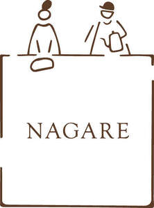

Trade Mark Journal No.2025/028 11 July 2025
UK00004215326 6 June 2025 (21,25,30,35,43)

- Class 21
- Coffee mugs; Coffee pots; Coffee cups; Coffee stirrers; Coffee services of china; Coffee filters, not of paper, being part of non-electric coffee makers; Coffee filters not of paper being part of non-electric coffee makers; Coffee services of ceramic; Coffee services [tableware]; Coffee pots [non-electric]; Coffee mills (Hand operated -); Pastry bags; Mug sleeves; Cup holders; Cups; Cup lids; Tea cups; Glass cups; Cups and mugs; Drinking cups; Plastic cups; Compostable cups; Paper cups; Biodegradable cups; Paper baking cups; Baking cups of paper; Cups of paper or plastic; Cups made of earthenware; Double wall cups; Cups made of pottery; Cups, not of precious metal.
- Class 25
- T-shirts; Short-sleeved T-shirts; Shirts; Printed t-shirts; Long-sleeved shirts; Tee-shirts; Knit shirts; Sweat shirts; Open-necked shirts; Polo shirts; Casual shirts; Hooded sweat shirts; Sleeveless jerseys; Hoodies; Sleeveless jackets; Sleeveless pullovers; Beanie hats; Tank-tops; Turtleneck pullovers; Headbands [clothing]; Headbands for clothing; Hats (Paper -) [clothing]; Caps; Caps [headwear]; Caps being headwear; Bucket caps; Baseball caps; Flat caps; Top hats.
- Class 30
- Coffee; Coffee bags; Coffee drinks; Chocolate coffee; Iced coffee; Mixtures of malt coffee with coffee; Coffee beverages; Coffee essences for use as substitutes for coffee; Decaffeinated coffee; Coffee extracts for use as substitutes for coffee; Drip bag coffee; Coffee (Unroasted -); Unroasted coffee; Coffee beans; Coffee substitutes [artificial coffee or vegetable preparations for use as coffee]; Coffee beverages with milk; Coffee pods; Coffee based drinks; Beverages with coffee base; Beverages with a coffee base; Beverages made from coffee; Beverages made of coffee; Mixtures of malt coffee extracts with coffee; Coffee flavorings; Instant coffee; Coffee based beverages; Caffeine-free coffee; Coffee flavourings; Flavoured coffee; Coffee in whole-bean form; Ice beverages with a coffee base; Coffee extracts; Aerated drinks [with coffee, cocoa or chocolate base]; Ground coffee; Coffee concentrates; Powdered coffee in drip bags; Substitutes (Coffee -); Coffee substitutes; Cappuccino; Coffee in brewed form; Espresso; Freeze-dried coffee; Unroasted coffee beans; Prepared coffee and coffee-based beverages; Mixtures of coffee; Coffee mixtures; Prepared coffee beverages; Aerated beverages [with coffee, cocoa or chocolate base]; Roasted coffee beans; Mixtures of coffee essences and coffee extracts; Beverages based on coffee; Coffee, teas and cocoa and substitutes therefor; Bakery goods; Gluten-free bakery products; Chocolate fillings for bakery products; Pastries; Mixes for making bakery products; Macaroons [pastry]; Chocolate for confectionery and bread; Pastry; Preparations for making bakery products; Danish pastries; Viennese pastries; Dairy confectionery; Chocolate pastries; Ice-cream cakes; Flour confectionery; Pastries, cakes, tarts and biscuits (cookies); Frozen pastries; Confectionery; Almond pastries; Savory pastries; Frozen pastry; Confectionery chips for baking; Breads; Vegan cakes; Frozen dairy confections; Prepared desserts [pastries]; Confectionery bars; Croissants; Pastries with fruit; Fruit pastries; Prepared desserts [confectionery]; Gluten-free bread; Pastry dough; Cake doughs; Fondants [confectionery]; Pizza flour; Chocolate confectionery; Cakes; Dough for cakes; Frozen confectionery; Truffles [confectionery]; Almond confectionery; Danish bread; Confectionery chocolate products; Chocolate confectionery products; Pastry mixes; Flour for doughnuts; Bread doughs; Snack food products made from rusk flour; Viennoiserie; Chocolate cakes; Fruit filled pastry products; Danish bread rolls; Sesame confectionery; Non-medicated flour confectionery; Muesli desserts; Bread buns; Bread and buns; Custard-based fillings for cakes and pies; Fruit confectionery; Cake flour; Potato flour confectionery; Breakfast cake; Bread biscuits; Chocolate-based fillings for cakes and pies; Pre-baked bread; Malt cakes; Shortcrust pastry; Baguettes; Ready-to-bake dough products; Brioches; Cream cakes; Chocolate confections; Frozen cakes; Fruit breads; Frozen yogurt cakes; Cocoa-based ingredients for confectionery products; Confectionery ices; Cake dough; Truffles (rum -) [confectionery]; Bread; Cupcakes; Long-life pastry; Flour for baking; Frozen yogurt [confectionery ices]; Yogurt (Frozen -) [confectionery ices]; Nut confectionery; Chocolate desserts; Marshmallow confectionery; Frozen yogurt confections; Cake bars; Snack food products made from cereal flour; Non-medicated flour confections; Doughnuts; Pizza dough; Cheesecakes; Iced tea; Tea (Iced -); Chai tea; Tea; Coffee capsules; Tea beverages with milk; Coffee [roasted, powdered, granulated, or in drinks]; Instant tea; Iced tea mix powders; Tea bags; Tea substitutes; Tea pods.
- Class 35
- Retail services in relation to coffee; Retail services in relation to bakery products; Retail services relating to bakery products; Inventorying merchandise; Display services for merchandise; Merchandising; Product merchandising; Mail order retail services for clothing accessories; Merchandizing; Online retail store services in relation to clothing; Retail store services in the field of clothing; Retail services in relation to clothing accessories; Online retail services relating to clothing; Mail order retail services for clothing; Mail order retail services connected with clothing accessories; Retail services relating to clothing; Mail order retail services related to foodstuffs; Mail order retail services related to non-alcoholic beverages; Retail services via catalogues related to foodstuffs; Unmanned retail store services relating to drink; Retail services in relation to clothing; Retail services via catalogues related to alcoholic beverages (except beer); Retail services in relation to stationery supplies; Retail services via catalogues related to non-alcoholic drinks; Retail services relating to candy; Retail services in relation to baked goods.
- Class 43
- Coffee shops; Coffee shop services; Coffee bar services; Delicatessens [restaurants]; Cafe services; Take-away restaurant services; Salad bars [restaurant services]; Take-out restaurant services; Self-service restaurant services; Restaurant services; Restaurant and bar services; Bar and restaurant services; Café services; Restaurants (Self-service -); Self-service restaurants.
Nagare Coffee Limited